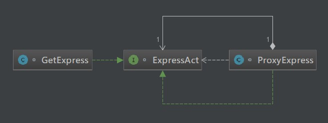
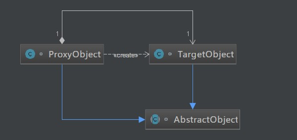

原文出处:本文由博客园博主知了一笑提供。
原文连接:https://www.cnblogs.com/cicada-smile/p/11761931.html
原文连接:https://www.cnblogs.com/cicada-smile/p/11761931.html
本文源码：GitHub·点这里 || GitEE·点这里
一、生活场景
1、场景描述
在电商高速发展的今天，快递的数量十分庞大，甚至出现了快递代理行业，简单的说就是快递的主人没有时间收快递，会指定一个快递的代收点，比如快递柜，快递驿站等，然后等有时间的时候再过去取，下面使用代码对这个场景进行简单的描述。
2、场景图解

3、源码实现
public class C01_InScene {
public static void main(String[] args) {
/*自己收快递的测试方式*/
GetExpress getExpress = new GetExpress();
getExpress.sureInfo();
getExpress.signName("张三");
/*代收快递的测试方式*/
ExpressAct getUser = new GetExpress();
ExpressAct getProxy = new ProxyExpress(getUser);
getProxy.sureInfo();
getProxy.signName("李四");
}
}
/**
* 接收一个快递的动作接口：确认信息，签名
*/
interface ExpressAct{
void sureInfo();
void signName(String name);
}
/**
* 定义一个类接收快递:自己去拿快递
*/
class GetExpress implements ExpressAct{
@Override
public void sureInfo() {
System.out.println("请确认你的个人信息！");
}
@Override
public void signName(String name) {
System.out.println("你的名字是："+name);
}
}
/**
* 定义一个类接收快递:找人代领快递
*/
class ProxyExpress implements ExpressAct{
private ExpressAct expressAct=null;
public ProxyExpress(ExpressAct expressAct){
this.expressAct = expressAct;
}
@Override
public void sureInfo() {
this.expressAct.sureInfo();
}
@Override
public void signName(String name) {
this.expressAct.signName(name);
}
}二、代理模式
1、概念描述
代理模式是对象的结构模式。代理模式给某一个对象提供一个代理对象，并由代理对象控制对原对象的引用。所谓代理，就是一个对象代表另一个对象执行相应的动作程序。而代理对象可以在客户端和目标对象之间起到中介的作用。
2、模式图解

3、核心角色
- 抽象对象角色
声明目标对象和代理对象的共同接口。
- 目标对象角色
定义了代理对象所代表的目标对象。
- 代理对象角色
代理对象内部含有目标对象的引用，可以在任何时候操作目标对象；代理对象提供一个与目标对象相同的接口，可以在任何时候替代目标对象。代理对象通常在客户端调用传递给目标对象之前或之后，执行某个操作，而不是单纯地将调用传递给目标对象，AOP编程就是基于这个思想。
4、源码实现
public class C02_Proxy {
public static void main(String[] args) {
AbstractObject object = new ProxyObject();
object.operation();
}
}
/**
* 抽象对象角色
*/
abstract class AbstractObject{
public abstract void operation();
}
/**
* 目标对象角色
*/
class TargetObject extends AbstractObject{
@Override
public void operation() {
System.out.println("Target Method Run...");
}
}
/**
* 代理对象角色
*/
class ProxyObject extends AbstractObject{
TargetObject targetObject = new TargetObject();
@Override
public void operation() {
System.out.println("Method Before...");
targetObject.operation();
System.out.println("Method After...");
}
}三、JDK动态代理
基于JDK动态代理方式实现AOP切面编程。
1、代码实现
public class C03_JdkProxy {
public static void main(String[] args) {
BookService bookService = BookAopProxyFactory.createService() ;
System.out.println(bookService.getBook());
}
}
class BookAspect {
public void before (){
System.out.println("Method Before ...");
}
public void after (){
System.out.println("Method After ...");
}
}
interface BookService {
String getBook () ;
}
class BookServiceImpl implements BookService {
@Override
public String getBook() {
System.out.println("目标方法【getBook】被执行");
return "高性能MySQL";
}
}
class BookAopProxyFactory {
public static BookService createService() {
// 目标类
final BookService bookService = new BookServiceImpl() ;
// 切面类
final BookAspect bookAspect = new BookAspect();
/*
* 代理类：将目标类（切入点）和 切面类（通知） 结合
*/
BookService proxyBookService = (BookService) Proxy.newProxyInstance(
BookAopProxyFactory.class.getClassLoader(),
bookService.getClass().getInterfaces(),
new InvocationHandler() {
public Object invoke(Object proxy, Method method,
Object[] args) throws Throwable {
// 前执行
bookAspect.before();
// 执行目标类的方法
Object obj = method.invoke(bookService, args);
// 后执行
bookAspect.after();
return obj;
}
});
return proxyBookService ;
}
}四、几种常见代理
- 防火墙代理
内网通过代理穿透防火墙，实现对公网的访问。
- 缓存代理
为了缓解网站并发压力，在请求数据库资源时，先取缓存中代理的数据，如果缓存未命中，再到数据库取数据，然后缓存取到的数据。
- 远程代理
远程对象的本地代理对象，通过它可以把远程对象当本地对象调用 。远程代理通过网络和调用的远程对象进行信息交互 。
- 同步代理
主要使用在多线程编程中，完成多线程间同步工作。
五、源代码地址
GitHub·地址
https://github.com/cicadasmile/model-arithmetic-parent
GitEE·地址
https://gitee.com/cicadasmile/model-arithmetic-parent：代理模式2.png)